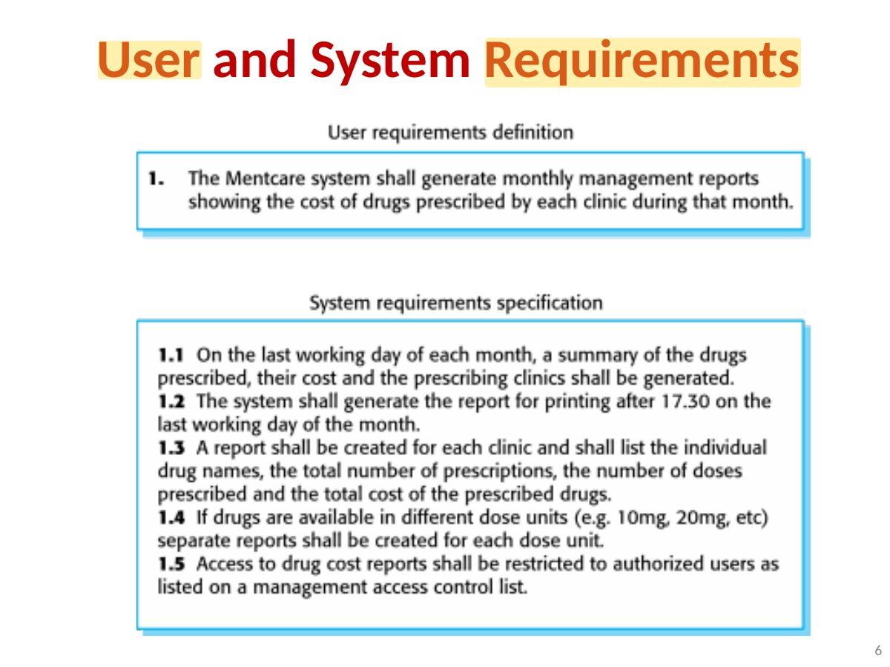
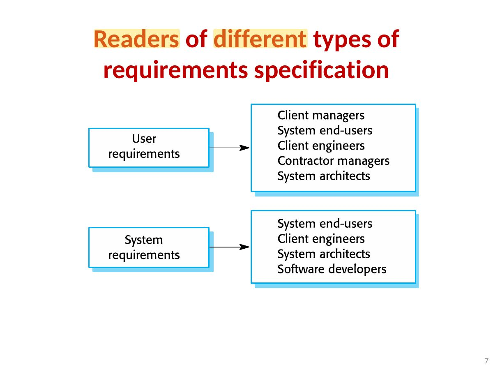
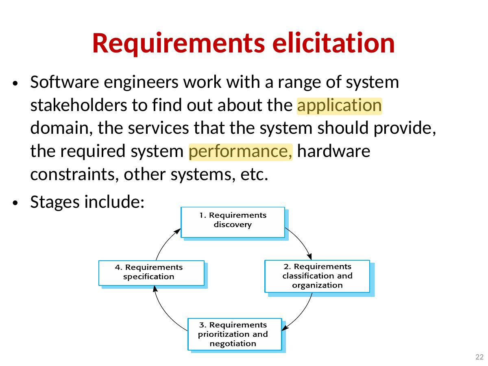
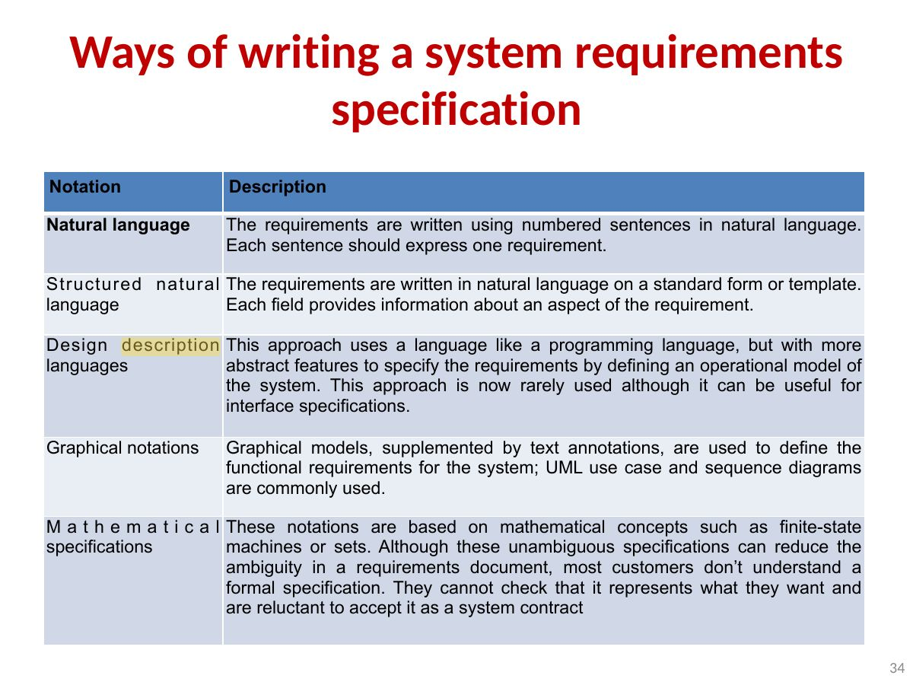

Exam weight Low
Topics covered:
- Functional and non-functional requirements
- Requirements engineering processes
- Requirements elicitation
- Requirements specification
- Requirements validation
- Requirements change
- System modeling
2
Exam weight ●○○ Low
The Requirements Process
- A requirement is an expression of desired behaviour.
- Requirements focus on the customer needs, not on the solution or implementation.
- Requirements designate what behaviour, without saying how that behaviour will be realized
3
Exam weight ●○○ Low
Requirements engineering
- The process of establishing the services that a customer requires from a system and the constraints under which it operates and is developed.
- The system requirements are the descriptions of the system services and constraints that are generated during the requirements engineering process.
4
Exam weight ●○○ Low
Types of Requirements
- User requirements Statements in natural language plus diagrams of the services the system provides and its operational constraints. Written for customers.
- System requirements A structured document setting out detailed descriptions of the system’s functions, services and operational constraints. Defines what should be implemented so may be part of a contract between client and contractor.
5
Exam weight ●○○ Low

Exam weight ●○○ Low
- User requirements: natural language + diagrams for customers. System requirements: detailed, structured, for developers and contracts.

Exam weight ●○○ Low
System Stakeholders
- Any person or organization who is affected by the system in some way and so who has a legitimate interest
- Stakeholder types
- End users
- System managers
- System owners
- External stakeholders
8
Exam weight ●○○ Low
Example: Stakeholders in the Mentcare system
- Patients whose information is recorded in the system.
- Doctors who are responsible for assessing and treating patients.
- Nurses who coordinate the consultations with doctors and administer some treatments.
- Medical receptionists who manage patients’ appointments.
- IT staff who are responsible for installing and maintaining the system.
- A medical ethics manager who must ensure that the system meets current ethical guidelines for patient care.
- Health care managers who obtain management information from the system.
- Medical records staff who are responsible for ensuring that system information can be maintained and preserved, and that record keeping procedures have been properly implemented.
9
Exam weight ●○○ Low
Functional and Non-Functional Requirements
10
Exam weight ●●● High
- Functional: what the system should DO (services). Non-functional: constraints on HOW (performance, security, usability, reliability). Domain: from the application domain.
Memory trickIf it says "the system shall <do something>", it is functional; if it talks about speed, availability, platform, it is non-functional.
🎯 How this can come up · 2 questions
MCQ
"The system shall be available 99.9% of the time" is a:
Correct: Non-functional requirement.
MCQ
"A user shall be able to search the appointment list" is a:
Correct: Functional requirement.
Functional and Non-Functional Requirements
- Functional Requirements
- Statements of services the system should provide, how the system should react to particular inputs and how the system should behave in particular situations.
- May state what the system should not do.
- Non-functional requirements
- Constraints on the services or functions offered by the system such as timing constraints, constraints on the development process, standards, etc.
- Often apply to the system as a whole rather
- than individual features or services.
11
Exam weight ●○○ Low
Functional and Non-Functional Requirements
- Domain requirements
- Constraints on the system from the domain of operation
12
Exam weight ●○○ Low
Functional Requirements
- Describe functionality or system service.
- Depend on the type of software being developed, expected users and the type of system where the software is used.
- Functional user requirements may be high-level statements of what the system should do.
- Functional system requirements should describe the system services in detail.
- When expressed as user requirements, functional requirements should be written in natural language so that system users and managers can understand them.
- Functional system requirements expand the user requirements and are written for system developers known as system requirements. They should describe the system functions, their inputs and outputs, and exceptions in detail.
13
Exam weight ●○○ Low
Functional Requirements Example
Mentcare System (About patients receiving treatment for mental health problems):
- A user shall be able to search the appointments lists for all clinics.
- The system shall generate each day, for each clinic, a list of patients who are expected to attend appointments that day.
- Each staff member using the system shall be uniquely identified by his or her 8-digit employee number.
14
Exam weight ●○○ Low
Non-functional Requirements
- These define system properties and constraints e.g. reliability, response time and storage requirements. Constraints on I/O device capability, system representations, memory use etc.
- Process requirements may also be specified mandating a particular IDE, programming language or development method.
- Non-functional requirements may be more critical than functional requirements. If these are not met, the system may be useless. E.g. aircraft system not meeting reliability or performance requirements will not be certified safe for operation.
15
Exam weight ●○○ Low
Types of Non-functional Requirement
- Product requirements These requirements specify or constrain the runtime behavior of the software. Requirements which specify that the delivered product must behave in a particular way e.g. execution speed, reliability, security and usability etc.
- Organisational requirements Requirements which are a consequence of organisational (customer’s and developer’s) policies and procedures e.g. operational process requirements that define how the system will be used; development process requirements that specify the programming language; the development environment or process standards to be used; and environmental requirements that specify the operating environment of the system.
- External requirements Requirements which arise from factors which are external to the system and its development process e.g. regulatory requirements, legislative requirements, ethical requirements etc.
16
Exam weight ●○○ Low
- Non-functional types: product (performance, usability, reliability), organizational (process, standards), external (legal, ethical).
Non-Functional Requirements Example
Mentcare System (About patients receiving treatment for mental health problems):
- Product requirement The Mentcare system shall be available to all clinics during normal working hours (Mon–Fri, 0830–17.30). Downtime within normal working hours shall not exceed five seconds in any one day.
- Organizational requirement Users of the Mentcare system shall authenticate themselves using their health authority identity card.
- External requirement The system shall implement patient privacy provisions as set out in HStan-03-2006-priv.
17
Exam weight ●○○ Low
Requirements Engineering Processes
18
Exam weight ●○○ Low
- RE process: elicitation and analysis → specification → validation, iterated (spiral).
Requirements Engineering Processes
- The processes used for RE vary widely depending on the application domain, the people involved and the organisation developing the requirements.
- However, there are a number of generic activities common to all processes
- Requirements elicitation;
- Requirements analysis;
- Requirements validation;
- Requirements management.
- In practice, RE is an iterative activity in which these processes are interleaved.
19
Exam weight ●○○ Low
Requirements elicitation and analysis
- The aims of the requirements elicitation process are to understand the work that stakeholders do and how they might use a new system to help support that work.Sometimes called requirements elicitation or requirements discovery.
- During requirements elicitation, software engineers work with stakeholders to find out about the application domain, work activities, the services and system features that stakeholders want, the required performance of the system, hardware constraints.
- May involve end-users, managers, engineers involved in maintenance, domain experts, trade unions, etc. These are called stakeholders.
20
Exam weight ●○○ Low
Problems of Requirements Elicitation
- Stakeholders make unrealistic demands because they don’t know what is and isn’t feasible.
- Stakeholders express requirements in their own terms., which are not understood by Requirements Engineers
- Different stakeholders with diverse requirements, may have conflicting requirements.
- Managers may demand specific system requirements because these will allow them to increase their influence in the organization.
- The requirements change during the analysis process. New requirements may emerge from new stakeholders who were not originally consulted and the economic or business environment may change.
21
Exam weight ●○○ Low
- Elicitation problems: stakeholders don’t know what they want, use their own terms, conflict, change their minds; politics.

Exam weight ●○○ Low
Process activities
- Requirements elicitation (or discovery)
- Interacting with stakeholders to discover their requirements. Domain requirements are also discovered at this stage.
- Requirements classification and organisation
- Groups related requirements and organises them into coherent clusters.
- Prioritisation and negotiation
- Prioritising requirements and resolving requirements conflicts.
- Requirements specification
- Requirements are documented and input into the next phase.
23
Exam weight ●○○ Low
Requirements Elicitation (or discovery)
- The process of gathering information about the required and existing systems and distilling the user and system requirements from this information.
- Interaction is with system stakeholders from managers to external regulators.
24
Exam weight ●○○ Low
Requirements elicitation techniques
- There are two fundamental approaches to requirements elicitation:
- Interviewing, where you talk to people about what they do.
- Observation or ethnography, where you watch people doing their job to see what artifacts they use, how they use them, and so on
25
Exam weight ●○○ Low
- Techniques: interviews (closed/open), ethnography (observation), scenarios, use cases, stories.
Requirements specification
26
Exam weight ●○○ Low
Agile methods and requirements
- Many agile methods argue that producing detailed system requirements is a waste of time as requirements change so quickly.
- The requirements document is therefore always out of date.
- Agile methods usually use incremental requirements engineering and may express requirements as ‘user stories’
- This is practical for business systems but problematic for systems that require pre-delivery analysis (e.g. critical systems) or systems developed by several teams.
27
Exam weight ●○○ Low
Stories and scenarios
- Scenarios and user stories are real-life examples of how a system can be used.
- Stories and scenarios are a description of how a system may be used for a particular task.
- Because they are based on a practical situation, stakeholders can relate to them and can comment on them.
28
Exam weight ●○○ Low
- User story: "As a <role>, I want <goal> so that <benefit>." Scenarios describe a real interaction in more detail.
A user Story: Photo sharing in the classroom (iLearn)
- Salah is a primary school teacher. He has decided that a class project should be focused around the fishing industry in the area, a project looking at the history, development and economic impact of fishing:
- He describes the system this way:
“Pupils should gather and share old memories from relatives, use newspaper archives and collect old photographs related to fishing and fishing communities in the area. Pupils use a wiki to gather fishing stories and use SCRAN (a history resources site) to access newspaper archives and photographs. I also need a photo sharing site as I wants pupils to take and comment on each others’ photos and to upload scans of old photographs that they may have in their families.”
29
Exam weight ●○○ Low
Scenarios
- A structured form of user story
- Scenarios should include
- A description of the starting situation;
- A description of the normal flow of events;
- A description of what can go wrong;
- Information about other concurrent activities;
- A description of the state when the scenario finishes.
30
Exam weight ●○○ Low
Scenario: Uploading photos (iLearn)
- Initial assumption: A user or a group of users have one or more digital photographs to be uploaded to the picture sharing site. These are saved on either a tablet or laptop computer. They have successfully logged on to the system.
- Normal: The user chooses upload photos and is prompted to select the photos to be uploaded from his computer and to select the project name under which the photos will be stored. Users should also be given the option of inputting keywords that should be associated with each uploaded photo. Uploaded photos are named by creating a conjunction of the username with the filename of the photo on the local computer. On completion of the upload, the system automatically sends an email to the project moderator asking them to check new content and generates an on-screen message to the user that this has been done.
31
Exam weight ●○○ Low
Uploading photos (iLearn) (2)
- What can go wrong:
- No moderator is associated with the selected project. An email is automatically generated to the school administrator asking them to nominate a project moderator. Users should be informed that there could be a delay in making their photos visible.
- Photos with the same name have already been uploaded by the same user. The user should be asked if they wish to re-upload the photos with the same name, rename the photos or cancel the upload. If they chose to re-upload the photos, the originals are overwritten. If they chose to rename the photos, a new name is automatically generated by adding a number to the existing file name.
- Other activities: The moderator may be logged on to the system and may approve photos as they are uploaded.
- System state on completion: User is logged on. The selected photos have been uploaded and assigned a status ‘awaiting moderation’. Photos are visible to the moderator and to the user who uploaded them.
32
Exam weight ●○○ Low
h
Requirements specification
- The process of writing down the user and system requirements in a requirements document.
- User requirements have to be understandable by end-users and customers who do not have a technical background.
- System requirements are more detailed requirements and may include more technical information.
- The requirements may be part of a contract for the system development
- It is therefore important that these are as complete as possible.
33
Exam weight ●○○ Low

Exam weight ●○○ Low
Natural language specification
- Requirements are written as natural language sentences supplemented by diagrams and tables.
- Used for writing requirements because it is expressive, intuitive and universal. This means that the requirements can be understood by users and customers.
35
Exam weight ●○○ Low
Guidelines for writing requirements
- Invent a standard format and use it for all requirements.
- Use language in a consistent way. Use shall ( ) for mandatory requirements, should ( ) for desirable requirements.
- Use text highlighting to identify key parts of the requirement.
- Avoid the use of computer jargon.
- Include an explanation (rationale) of why a requirement is necessary.
36
Exam weight ●○○ Low
- Guidelines: a standard format, "shall" for mandatory, "should" for desirable, highlight key parts, avoid jargon, explain why.
Problems with natural language
- Lack of clarity
- Precision is difficult without making the document difficult to read.
- Requirements confusion
- Functional and non-functional requirements tend to be mixed-up.
- Requirements amalgamation
- Several different requirements may be expressed together.
37
Exam weight ●○○ Low
Example requirements for the insulin pump software system
3.2 The system shall measure the blood sugar and deliver insulin, if required, every 10 minutes. (Changes in blood sugar are relatively slow so more frequent measurement is unnecessary; less frequent measurement could lead to unnecessarily high sugar levels.) 3.6 The system shall run a self-test routine every minute with the conditions to be tested and the associated actions defined in Table 1. (A self-test routine can discover hardware and software problems and alert the user to the fact the normal operation may be impossible.)
38
Exam weight ●○○ Low
The software requirements document
- The software requirements document is the official statement of what is required of the system developers.
- Should include both a definition of user requirements and a specification of the system requirements.
- It is NOT a design document. As far as possible, it should set of WHAT the system should do rather than HOW it should do it.
39
Exam weight ●○○ Low
- The SRS: the official statement of what is required; WHAT, not HOW.
Requirements validation
40
Exam weight ●○○ Low
Requirements validation
- Concerned with demonstrating that the requirements define the system that the customer really wants.
- Requirements error costs are high so validation is very important
- Fixing a requirements error after delivery may cost up to 100 times the cost of fixing an implementation error.
41
Exam weight ●●● High
- Validation checks: validity, consistency, completeness, realism, verifiability.
🎯 How this can come up · 1 question
MCQ
Checking that requirements do not contradict each other is a check for:
Correct: Consistency.
Requirements checking
- Validity: Does the requirement really describe the functions which best support the customer’s needs?
- Comprehensibility: Is the requirement properly understood?
- Consistency: Are there any requirements conflicts?
- Completeness: Are all functions required by the customer included?
- Realism: Can the requirements be implemented given available budget and technology
- Verifiability: Can the requirements be checked? Is the requirement realistically testable?
- Traceability: Is the origin of the requirement clearly stated?
- Adaptability: Can the requirement be changed without a large impact on other requirements?
42
Exam weight ●○○ Low
Requirements validation techniques
- Requirements reviews
- Systematic manual analysis of the requirements.
- Prototyping
- Using an executable model of the system to check requirements.
- Test-case generation
- Developing tests for requirements to check testability.
43
Exam weight ●○○ Low
- Validation techniques: requirements reviews, prototyping, test-case generation.
Requirements reviews
- Regular reviews should be held while the requirements definition is being formulated.
- Both client and contractor staff should be involved in reviews.
- Reviews may be formal (with completed documents) or informal.
- Good communications between developers, customers and users can resolve problems at an early stage.
44
Exam weight ●○○ Low
Requirements management
- Requirements management is the process of managing changing requirements during the requirements engineering process and system development.
- New requirements emerge as a system is being developed and after it has gone into use.
- You need to keep track of individual requirements and maintain links between dependent requirements so that you can assess the impact of requirements changes. You need to establish a formal process for making change proposals and linking these to system requirements.
45
Exam weight ●○○ Low
- Requirements management: track changes, traceability, change control.
Key points
- Requirements for a software system set out what the system should do and define constraints on its operation and implementation.
- Functional requirements are statements of the services that the system must provide or are descriptions of how some computations must be carried out.
- Non-functional requirements often constrain the system being developed and the development process being used.
- They often relate to the emergent properties of the system and therefore apply to the system as a whole.
- The requirements engineering process is an iterative process that includes requirements elicitation, specification and validation.
46
Exam weight ●○○ Low
Key points
- You can use a range of techniques for requirements elicitation including interviews and ethnography. User stories and scenarios may be used to facilitate discussions.
- Requirements specification is the process of formally documenting the user and system requirements and creating a software requirements document.
- The software requirements document is an agreed statement of the system requirements. It should be organized so that both system customers and software developers can use it.
- Requirements validation is the process of checking the requirements for validity, consistency, completeness, realism and verifiability.
- Business, organizational and technical changes inevitably lead to changes to the requirements for a software system. Requirements management is the process of managing and controlling these changes.
47
Exam weight ●○○ Low
No slides match this filter.